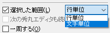
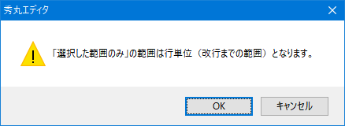

[HME0083A]
●検索/置換の「選択した範囲」の動作

- 検索/置換の「選択した範囲」の動作がちょっと変な感じがしますが？時々、ダイアログの「選択した範囲」チェックボックスがグレーになって変更不可になったり、選択した範囲より少し外側まで検索/置換されたりするようです。

-
「選択した範囲」チェックボックスが有効になるのは、範囲選択している場合だけです。
秀丸エディタのバージョンにより動作が異なります。
Ver.8.94以降の場合
検索/置換の範囲を「行単位」にするか「文字単位」にするか選択可能です。 BOX範囲選択、複数選択 状態の場合は、「文字単位」がデフォルトで選択されます、

- 行単位
- Ver.8.94未満と同じ動作。選択範囲を含む先頭の行頭から、末尾の行末まで。
- 文字単位
- 選択範囲部分のみ
Ver.8.94未満の場合
検索/置換の「選択した範囲」の機能は「行単位」のみ。
BOX範囲選択は、文字単位の選択になるので、「選択した範囲」は有効になりません。
複数選択している場合は、カーソルのある行が対象になります。選択範囲の始まりが行頭でない/選択範囲の終わりが行末でない状態で「選択した範囲内」をONにし、「行単位」で検索/置換を実行した場合は、範囲は行単位になると、メッセージが表示されます。

「行単位」だと以下のような動作になるため、範囲選択した箇所と、検索/置換の範囲が一致しない場合があります。
- 選択範囲の始まりが行頭でない場合、検索/置換の開始は選択範囲の始まりの行頭から。
- 選択範囲の終わりが行末でない場合、検索/置換の終了は選択範囲の終わりの行の行末まで。ただし、選択範囲の終わりが行頭の場合は、その前の行の行末まで。
- 行単位の例1)
-
選択範囲
ABCDEFGHIJKLMNOPQRSTUVWXYZ↓ ABCDEFGHIJKLMNOPQRSTUVWXYZ↓ ABCDEFGHIJKLMNOPQRSTUVWXYZ↓ ↓
実際の検索範囲
ABCDEFGHIJKLMNOPQRSTUVWXYZ↓ ABCDEFGHIJKLMNOPQRSTUVWXYZ↓ ABCDEFGHIJKLMNOPQRSTUVWXYZ↓ ↓
- 行単位の例2)
-
選択範囲
ABCDEFGHIJKLMNOPQRSTUVWXYZ↓ ABCDEFGHIJKLMNOPQRSTUVWXYZ↓ ABCDEFGHIJKLMNOPQRSTUVWXYZ↓ ↓実際の検索範囲
ABCDEFGHIJKLMNOPQRSTUVWXYZ↓ ABCDEFGHIJKLMNOPQRSTUVWXYZ↓ ABCDEFGHIJKLMNOPQRSTUVWXYZ↓ ↓
文書中の内容を検索文字列として取り込む為に、改行を含む範囲を選択行い検索/置換を実行すると、範囲選択した文字列が検索/置換ダイアログの検索文字列に取り込まれず、「選択した範囲内のみ」が有効な状態で検索/置換ダイアログが開く場合があります。 (選択した範囲によって動作が異なる)
この状態で検索/置換コマンドを割り当てたキーを押すと、選択範囲が「検索文字列」として取り込まれ、「選択した範囲」が解除されます。
- [補足]
-
マクロの検索系文で使用する「inselect」オプションは、複数行の選択でなくても有効です。行内の一部分のみを選択していても、範囲を拡張して1行を選択した状態で実行されます。
Ver.8.94未満の場合、検索の範囲を任意に指定したい場合や、BOX範囲選択を対象にしたい場合は、「カラーマーカー」を使います。
「第II部〜知っていると便利な秀丸の機能」の「検索」-「「追加の条件」について」を参照してください。